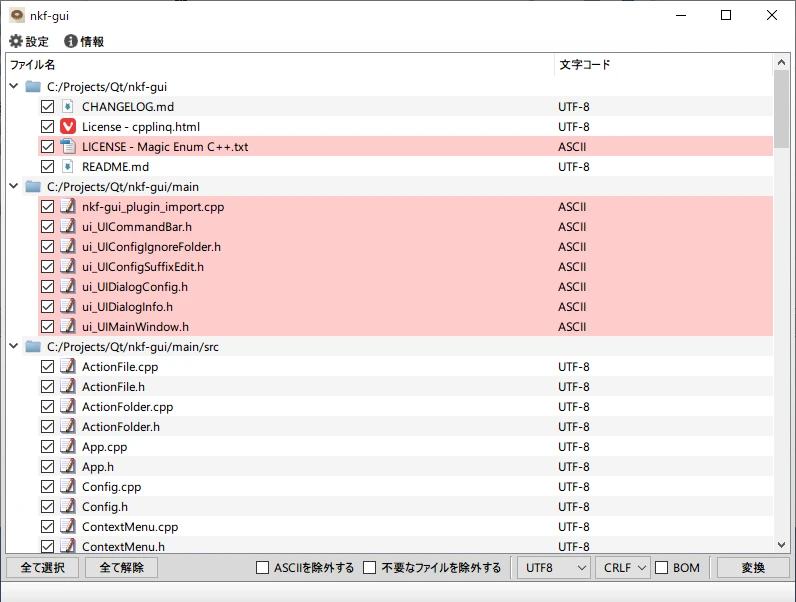

nkf-gui
nkfをGUIで扱うツール
コンセプトはパッと放り込んでパッと確認してパッと変換！！

機能
- 妙な文字コードが紛れていたら色で強調表示
- 妙な文字コードだけピックアップして表示する機能
- 特定フォルダを検索除外する機能
debug、releaseとか検索してほしくない時、等
現状の問題点
utf8しか対応してない- マルチスレッド処理を途中で中断出来てない
- 数万ファイル放り込むと延々と処理し続ける
変更履歴
[rev.15] - 2023-08-05
- 他の文字コードに対応(SJIS,EUC,UTF16LE,UTF16BE)
- 改行コードの変換に対応
- UnicodeのBOMの有無に対応
[rev.14] - 2023-07-02
- ログファイルの出力を止めた
[rev.12] - 2023-07-02
- 検索結果後に除外フィルター処理をしていたのをアイテム登録時に適用するようにした
- 検索中のステータスバーにフォルダ名を表示するように変更
[rev.11] - 2023-01-24
Added
- ASCII判定のファイルを変換対象から除外するオプションを追加
- ファイルリストアップ時のステータスメッセージを追加
Changed
- フレームレスウィンドウを止めた
- QtAwesomeを外した
[rev.7] - 2022-10-22
- initial commit
ダウンロード
リポジトリ
https://github.com/hananoki/nkf-gui